|
|
|
Мамай ПВД (покатушки выходных дней) Начало февраля, иркутская фрирайд-тусовка вносит элемент новаторства и организации в виде турбо-мега-пазика имени Шульца, в коем с 8 вечера и до 5 утра два десятка оптимистов перемещались по маршруту "Иркутск-Мамай". Параллельным и традиционным курсом, на электричках и с ночевкой в Слюдянке, двигалась и наша компания - два Алексея, Юля СНежная, Дима Сибирь и Катя. На лесной тропе были замечены ребята из Байкальска и Утулика, две девушки и три парня перемещали сноуборды в район целины, на один день, пару раз катануть... Еще наблюдалась прелестная картина - "Спящие прямо на тропе в палатке без дуг", всякое бывает в ночных заходах :) Сколько еще таких попадется нам на тропе :) 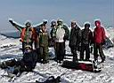 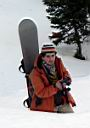 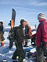 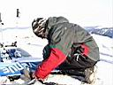 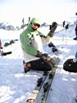 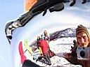 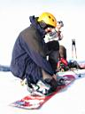 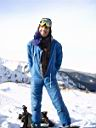 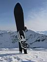 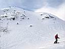 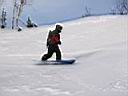 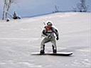 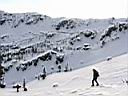 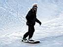 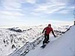 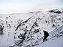 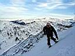 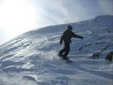 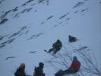 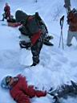 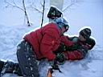 Как бы это не было плохо - это все равно хорошо! Все живы
и здоровы, опыт накоплен, не парься и будь счастлив! Мягкий снег на
Мамае все равно есть - нам еще тропить по нему до кунга :) Да и катанув
напоследок с Трех Берез по широкому кулуару, тоже поймали под бордом
остатки белого кайфа...
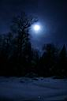 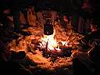 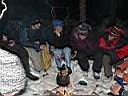 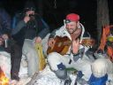 Вечерние посиделки закончилась за полночь - к нашей скромной зимушной компании пришла в гости компания из кунга, с офигенным пакованом травы... э, пардон, с пакетом жратвы и литрами вина :) Под полной луной и яркими звездами пахнет весной, разгорелся костер, варился и всем народом дегустировался глинтвейт с фруктами и коньяком, на гитарах зажигали Лёха и Костя. На следующее утро Саша Xslide встал раньше всех и тихо исчез из зимухи, а вернувшись с фото-охоты поведал сонному народу, что привалило немного снежка, тепло и радостно светит солнце. Это придало народу немного сил, чтобы проснуться, подсуетить завтрак и двинуть доски на Лесной. Правда не все двинули, и не все с досками и не все на Лесной. Единственная в нашей компании лыжница Ксюша сказала, что с маньяками не ходит и двинула лыжи на Три Березы :) 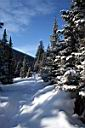 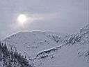 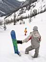 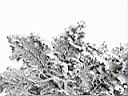 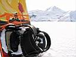 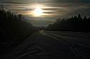 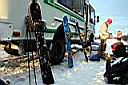 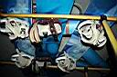
Фотографии Александра Трифонова (Xslide) 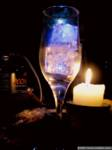 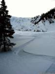 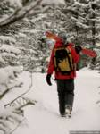 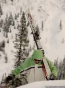 ... там же на сайте - песни у костра в исполнении Пестова Алексея ...
PS: вставил по тексту фоты от Ксюши и Андрея. Ксю - спасибо за отзывы в гостевухе, за фоты Луна и МЕГАпазик, и за остальные! Андрюха - респект и уважуха :) - свои фоты замутил на профайл.ру, заходим и смотрим! Есть что глянуть!
Февраль 2007 |
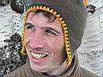 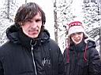 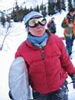 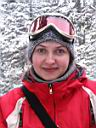 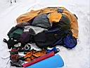 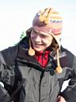 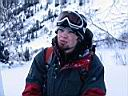 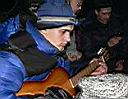 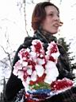
|